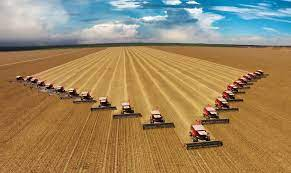

ROTAZIONE TRIENNALECHE COS'E ?La rotazione triennale si riferisce a una pratica agricola in cui i coltivatori alternano le colture su un determinato terreno ogni tre anni. Questo sistema è progettato per migliorare la salute del suolo, prevenire l'erosione e ridurre la pressione da parte di parassiti e malattie specifiche delle piante. COME FUNZIONA ?Nella rotazione triennale, un terreno può essere suddiviso in tre appezzamenti, ciascuno destinato a una coltura diversa. Le colture vengono poi ruotate tra questi settori in modo che ogni tipo di coltura venga piantato in una determinata area solo una volta ogni tre anni. Questa pratica aiuta a mantenere l'equilibrio nutrizionale del suolo, riduce la necessità di pesticidi specifici e può contribuire a migliorare la resa complessiva delle colture nel tempo. ESEMPI NELLA STORIA:In Europa, durante il medioevo, la rotazione triennale divenne più sistemica. Ad esempio, nel sistema di rotazione triennale noto come "tripla coltura" o "coltura a tre campi", un campo veniva seminato con cereali in un anno, seguito da leguminose nell'anno successivo e il terzo anno veniva lasciato a riposo o coltivato con erba per il pascolo. Questo modello contribuiva a migliorare la fertilità del suolo e a mantenere un ciclo sostenibile di produzione agricola. ROTAZIONE QUADRIENNALECHE COS'E ?La rotazione quadriennale delle colture è una pratica agricola che prevede la variazione periodica delle colture coltivate su un determinato terreno, seguendo un ciclo di quattro anni. Questo metodo è stato sviluppato per migliorare la fertilità del suolo, prevenire l'erosione, ridurre l'insorgenza di malattie e parassiti specifici delle colture e ottimizzare l'uso delle risorse. ESEMPI NELLA STORIA:Introdotta nel 18° secolo da agricoltori inglesi nella regione di Norfolk, questa rotazione prevedeva un ciclo di quattro anni che includeva turni di colture cerealicole, leguminose, radici e prati permanenti. Questa pratica ha contribuito a migliorare la fertilità del suolo e a incrementare la produzione di cibo. COLTIVAZIONI INTENSIVECHE COSA SONO ?Le coltivazioni intensive sono un tipo di pratica agricola che mira a massimizzare la produzione agricola su una superficie limitata di terreno attraverso l'uso intensivo di input come fertilizzanti, pesticidi, irrigazione e tecnologie avanzate. Questo approccio è progettato per ottenere rese elevate per unità di superficie, ma può comportare alcune sfide e preoccupazioni relative alla sostenibilità e all'impatto ambientale. COME FUNZIONANO ?Le coltivazioni intensive sono caratterizzate da un approccio agricolo che punta a massimizzare la produzione di colture su una superficie limitata di terreno. Questo processo coinvolge l'uso intensivo di risorse, tecniche avanzate e tecnologie per ottenere rese elevate. ESEMPI NELLA STORIA:Nel XVIII secolo, la Gran Bretagna ha sperimentato una trasformazione significativa nell'agricoltura. L'uso di nuove tecniche, come l'aratura profonda, la rotazione delle colture e l'adozione di nuovi attrezzi agricoli, ha portato a un aumento della produzione agricola. Questi cambiamenti sono stati fondamentali per lo sviluppo dell'agricoltura intensiva. Immagine che spiega il funzionamento della rotazione triennale Immagine che spiega il funzionamento della rotazione quadriennale  Foto di un campo coltivato in maniera intensiva |
 |